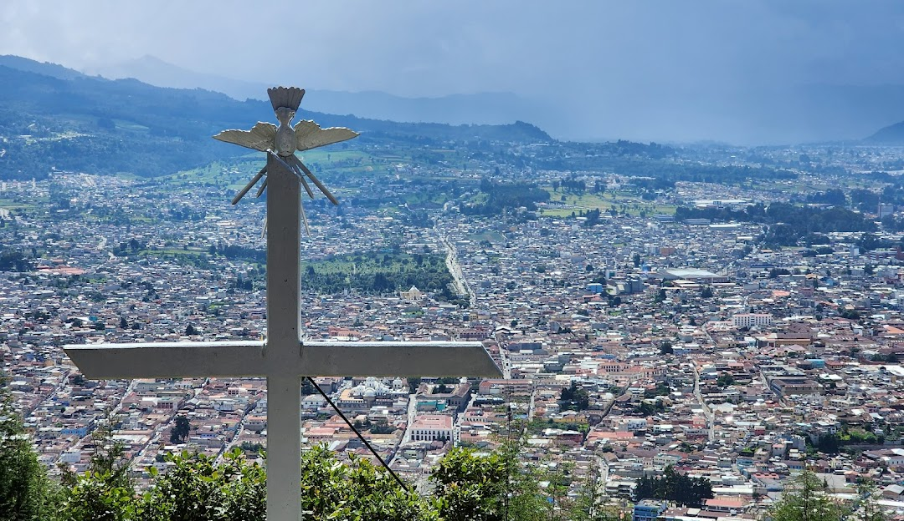

Quetzaltenango es una ciudad de Guatemala de la zona montañosa del oeste. Tiene un telón de fondo de volcanes, incluido el altísimo Santa María con su domo de lava activo Santiaguito. La Catedral del Espíritu Santo mira de lo alto al Parque a Centro América y tiene una fachada colonial barroca y un interior del siglo XX. La ciudad es conocida por los edificios neoclásicos, incluida la Casa de la Cultura y el Teatro Municipal restaurado.
Para más información, visita los siguientes enlaces:
Volcán Santa María Parque a Centro América Cerro El BaúlImágenes de algunos de los lugares turísticos de Quetzaltenango

Cerro El Baúl
Se encuentra en el límite sur-oriental de la ciudad de Quetzaltenango, a unos 3 km al norte del volcán de Cerro Quemado. Cerro El Baúl cubre un área de 2,40 km² y fue declarado parque nacional en 1955.

Catedral del Espíritu Santo
| Dirección | Horario | Precio |
|---|---|---|
| Quetzaltenango 11 avenida frente a Parque Centro América | Domingo a lunes de 07:00 a 17:00 | Gratis |
Actividades que puedes realizar
- Celebraciones Religiosas: Participar en misas, servicios dominicales y festividades religiosas especiales.
- Visitas Guiadas: Recorrer el interior de la catedral con guías que explican la historia y la arquitectura del lugar.
- Eventos Especiales: Asistir a conciertos de música sacra u otros eventos culturales que a veces se realizan en la catedral.
- Fotografía: Capturar la belleza arquitectónica y artística de la catedral.
- Compra de Recuerdos: Adquirir artículos religiosos o recuerdos en las tiendas cercanas a la catedral.
Parque a Centro Ámerica
| Dirección | Horario | Precio |
|---|---|---|
| 11-09 7a Calle, Quetzaltenango, Quetzaltenango 09001 | Lunes a Domingo las 24 horas | Gratis |
Actividades que puedes realizar
- Paseo al aire libre solo o acompañado
- Comer en medio de las áreas verdes
Volcán Santa María
| Dirección | Horario | Precio |
|---|---|---|
| Quetzaltenango, Quetzaltenango -A 10 Km al sur de la ciudad en el valle de Panajunoj, extremo sur del valle del Pinal. | Lunes a Domingo 24 horas | Gratis |
Actividades que puedes realizar
- Caminatas.
- Camping